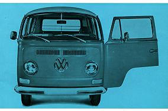

|
 |
| Chassis plate | M-plate |
Introduction This site will help you to decode the plates from the 1967-1979 Volkwagen Transporter and Microbus. It is the 2nd generation of Transporters, also known as 'T2', Baywindow' or 'Breadloaf'. For those of you that are wondering what a 2nd generation bus looks like. Below is an example. |
|
|  | |
| Volkswagen Type 2 of the 2nd generation (1967-1979) | |
|
© Vincent Molenaar |
|